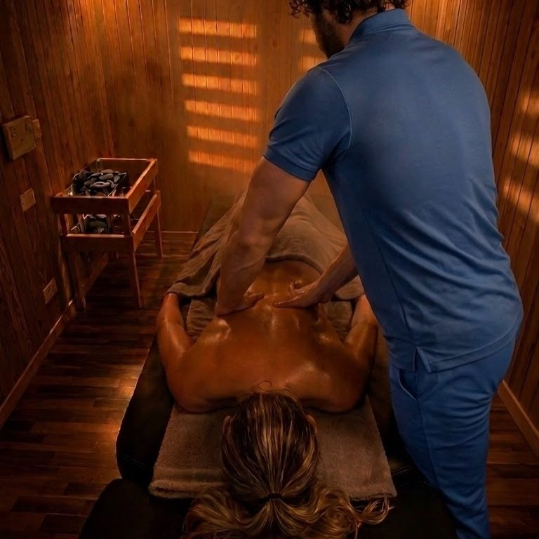
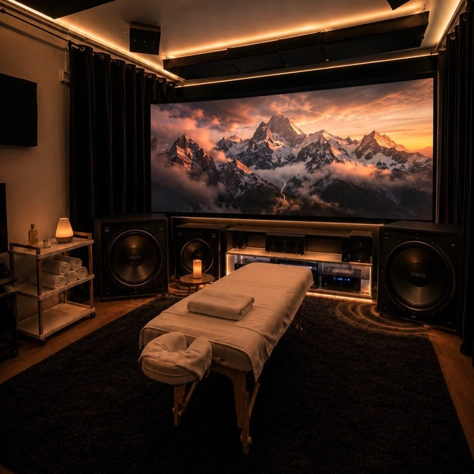

Lo studio
Lo stesso massaggio, fatto immerso nell'acqua a 34 °C, dentro una sauna o sotto un cielo stellato, non è lo stesso massaggio.
Ogni percorso parte da un'analisi InBody 770 e si costruisce sui numeri: sala, metodo e intensità si scelgono insieme, seduta per seduta. Le mani sono sempre le stesse. Otto sale, una persona.

Le sale
Otto sale. Otto universi.
La stanza si sceglie insieme, seduta per seduta.

Sala Emozionale
Sale rosa · cielo stellato
Lettino su sale rosa caldo, inclinabile di 30 gradi. Aromi, sound design e ritmo del massaggio a tempo di musica.

Massaggio in biosauna
30–43 °C · drenaggio amplificato
Calore e vasodilatazione durante il massaggio. La perdita di liquidi si misura con l'InBody prima e dopo.

Massaggio emozionale nel cinema
Dolby Atmos · 14 casse + 4 sub
Il corpo viene massaggiato seguendo frequenze musicali che agiscono sul sistema nervoso autonomo.

Musicoterapia con pianoforte
Pianoforte reale · suona da solo
Massaggio accompagnato da musica classica eseguita da un pianoforte vero, davanti al camino.
Quello che fa la differenza
Misuriamo, non fotografiamo.
Prima di toccarti, ti ascoltiamo
Acqua intra ed extracellulare, massa magra e grassa, equilibrio destra-sinistra arto per arto. Il numero lo leggi tu, sullo stesso strumento, a distanza di un'ora.
Vodder · Renata França · Manuela Shala
Unico studio in Veneto con qualifica sanitaria ad averli tutti e tre. Il metodo lo dicono i dati, non la sensazione.
Endless pool, sauna, vasca fredda
Nuoto controcorrente per aprire il sistema linfatico, sauna finlandese fronte camino, poi il massaggio in acqua a 34 °C.

Il passo successivo
Scrivimi e ti mando il catalogo
Due righe su WhatsApp con quello che cerchi. Ti rispondo io e, se vuoi, fissiamo la prima analisi InBody.
334 79 18 516